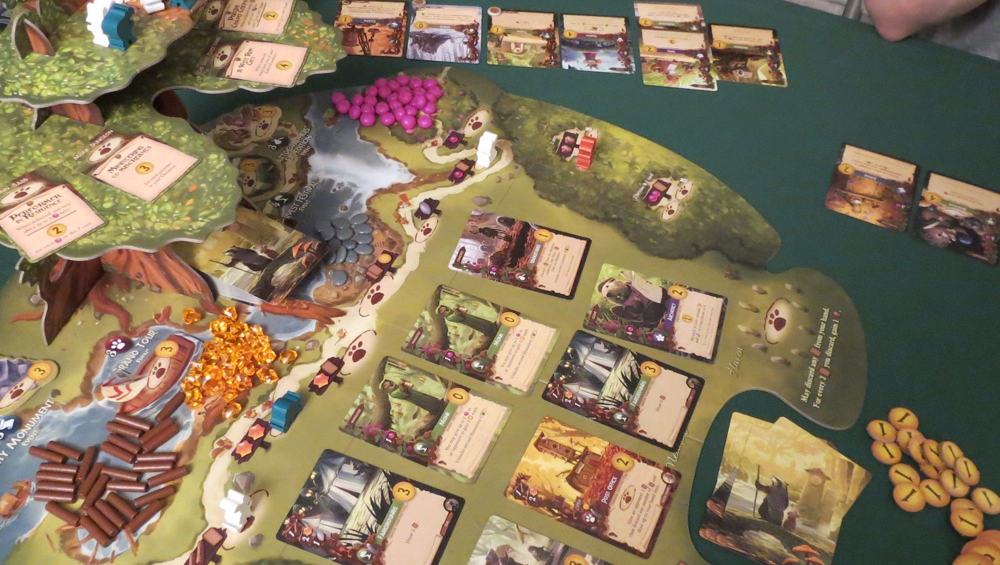

Everdell
Um jogo simples de aprender, porém que envolve uma profunda estratégia, sendo amado tanto por jogadores casuais quanto experientes. Seu trabalho é administar o reino, contratando trabalhadores, coletando recursos atravez da compra de cartas e ações especiais, todas que acumulam pontos ao longo da partida, que é medida em invernos. Vence o reino que, ao inicío do próximo inverno, tenha prosperado mais.
| Idade indicada | Número de jogadores | Duração da partida | Preço |
|---|---|---|---|
| +13 anos | 1 a 4 jogadores | 40 a 80 minutos | 429,99 reais |